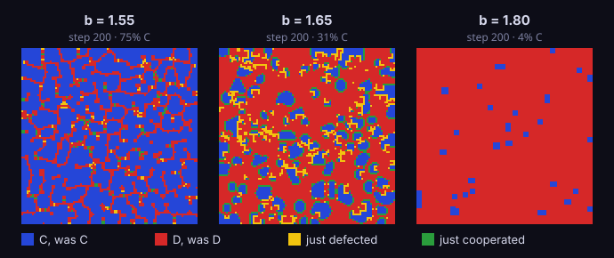
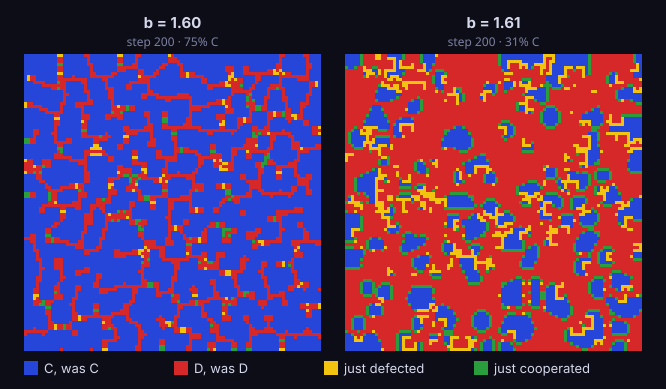
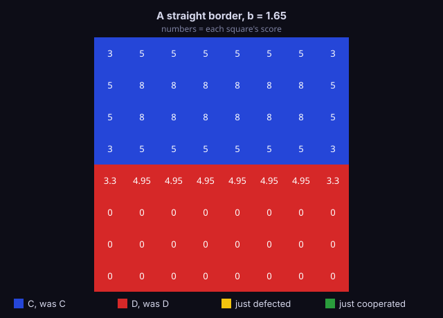
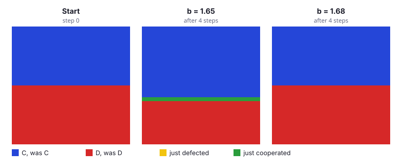
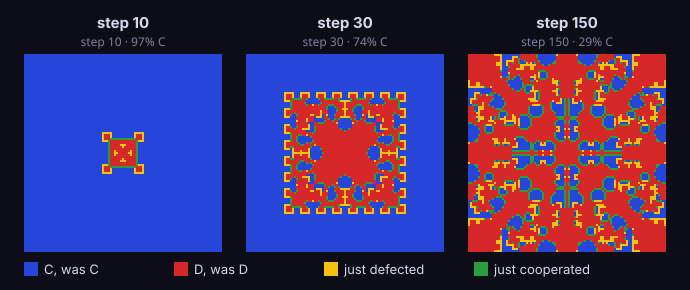

Growing a Second Brain: Learning a 1992 Nature Paper by Building It with AI
A dense paper about cooperation and chaos, a web app that teaches it, and why going slowly with AI was the whole point.
Try the app: spatial-game.vercel.app
The paper I couldn't read
In 1992, Martin Nowak and Robert May published a short paper in Nature called "Evolutionary games and spatial chaos."[1] It asks a simple question: how can cooperation survive when cheating pays more? Their answer uses a grid where every square is a player that either cooperates or defects. The paper is four pages long. It is also extremely dense, full of payoff matrices, fractions, and fractals.
This semester, my professor, Phillip Compeau, has been teaching me how to use AI as a tool, not a shortcut. He calls it growing your "second brain." So I tried it on this paper. With Claude, I built a web app that runs the model and explains it to someone seeing it for the first time. By the end, I now understand the paper well enough to teach you. Here we go...
One idea at a time
The game behind the paper is called the Prisoner's Dilemma. Two players each choose to cooperate or defect. If both players cooperate, each earns 1 point. If one defects while the other cooperates, the defector earns b points and the cooperator gets nothing. If both defect, neither earns anything. While there are technically two possible options, defecting never pays less than cooperating because we keep b bigger than 1. So therein lies the puzzle: if cheating never loses one-on-one, why does cooperation exist at all?
Nowak and May's idea was to put the players on a grid. Each square plays that game with its 8 neighbors and adds up its points. Then every square looks at itself and its neighbors and copies the strategy of whichever one scored highest. All the squares switch at the same moment, and the whole thing repeats.
Cooperators packed together earn points from each other, while defectors surrounded by defectors earn nothing. While on paper "defect" seems like the best option, multiple players joining the game complicates things. Therefore on a grid, what you play isn't all that matters. Who your neighbors are matters too.
Building it with Claude
I didn't ask Claude to build the app in one go. Following my professor's guidance, I wrote a plan first. Then I built one small piece at a time: first how a square scores, then how the whole grid updates, then the drawing and the buttons. Every piece came with tests and numbers I could check by hand:
- A cooperator surrounded by cooperators scores 8.
- A corner square, with only 3 neighbors, scores 3.
- A single defector among cooperators turns into a 3×3 block after one step. Each of its 8 neighbors touches 7 cooperators and gets nothing from the defector, so it scores 7. The defector scores 8b, which beats 7, so they all copy it.
Once the app ran, I could watch the grid change. I slid b up and down. I expected to see the behavior change smoothly but it didn't. It jumped. I didn't understand why, so I looked back to the paper and had Claude help explain it to me.
Where the world flips
Here's what those jumps look like. At b = 1.55, cooperators win. At 1.65, cooperators and defectors invade each other forever. At 1.80, defectors take over about 96% of the grid.

To understand why, I asked Claude to ask me one small question at a time instead of telling me everything all at once. The key idea I learned is that a cooperator scores a whole number, m, while a defector touching k cooperators scores k × b. A square's choice can only flip when a defector's score crosses a cooperator's, and they cross exactly when b = m/k. That's why the world flips at fractions like 8/5, not gradually.
One exchange went like this:
Claude: A cooperator surrounded by 8 cooperators scores 8. A nearby defector touches 5 cooperators. For which b does the defector win?
Me: 8/5 = 1.6, matches the drop at 1.61.
Then it showed me this:

Then I wondered to myself: at what concentration do the cooperators fight back against defectors? With the help of Claude, I was able to picture a straight border, with a block of cooperators on one side and a block of defectors on the other.

Three of a border cooperator's neighbors are across the border, so it touches 5 cooperators and scores 5. A defector on the border touches 3 cooperators, so it scores 3b. The defectors behind it touch no cooperators and score 0. Now look at it from the border defector's point of view. The best cooperator it can see is a border cooperator with 5 points. It can't see the cooperators with 8, because they're two rows away. So it switches to cooperating only if 5 beats 3b, which means b is below 5/3, about 1.67. When that happens, the whole border moves forward one row every step. Above 5/3, the border freezes.

Put the two thresholds together and the three behaviors from Figure 1 fall into place:
- Below 8/5: defectors can't break in, and cooperators can still push back, so cooperators win.
- Above 5/3: defectors can break in, and cooperators can't push back, so defectors take over most of the grid.
- In between: both happen at once. Defectors break into cooperator clusters, and cooperator clusters push back into defector territory. Neither side can finish the other, so the grid never settles. In my simulation, the share of cooperators there hovers near 30%, close to the 29.9% the paper reports.
Order from simple rules
What surprised me most about the simulation was the case of a single defector in a sea of cooperators. I expected one cheater to either get swallowed up or spread into a random mess. Neither happened.
At b = 1.63, the defector becomes a 3×3 block after one step. From there, it grows into a perfectly symmetric pattern that the paper calls an "evolutionary kaleidoscope."

The reason it stays symmetric is simple. The rules treat every direction the same, and every square updates at the same moment. So a start that looks the same in every direction stays that way forever. I checked: for all 400 steps I ran, the pattern was a perfect mirror image top to bottom, left to right, and across the diagonal.
Yet it never stands still. In the 400 steps I ran, it never repeated a single earlier pattern. Cooperators and defectors keep invading each other, the same back-and-forth from the last section, and the share of cooperators hovers around 30%. Nowak and May compare their model to John Conway's Game of Life,[2] another grid where a few simple rules produce surprisingly rich behavior.
That's the main thing I took from this project. I had assumed that something built on competition and cheating would look chaotic, random, and unpredictable. Instead, the same simple rules that churn endlessly from a random start produced something contained and ordered. Watching it happen on my own screen showed me that life can be organized, and even beautiful.
Creating vs. creating and understanding
Honestly, going this slowly felt strange at first. Claude could probably have "zero-shot" the whole app, meaning built it all at once from a single prompt. I would have gotten the same cool visuals.
But I would have lost two things. First, the app wouldn't be mine. Features like starting from your own photo (turned black and white, so dark pixels become defectors), the preset buttons, and the page layout came from choices I made along the way. Second, I wouldn't understand the paper. There's a difference between creating a product and creating and understanding it in one flow. This project is the first time I've felt like I used AI effectively, because I did both.
Next: The Hallmarks of Cancer
Now I want to know what else I can learn this way. My next target is The Hallmarks of Cancer, Douglas Hanahan's map of the abilities a cell gains as it becomes cancer. I read the newest version, "Hallmarks of cancer: Then and now, and beyond,"[3] in my high school biology class, and it took me about four hours to understand the first couple of pages. My plan is to build another web app that explains it, and write about it here. If it helps someone else understand the hallmarks of cancer, even better.
Until then, try the app at spatial-game.vercel.app. Start with one defector at b = 1.63 and press Play.
References
[1] Nowak, M. A. & May, R. M. "Evolutionary games and spatial chaos." Nature 359, 826–829 (1992). ↩
[2] Gardner, M. "Mathematical Games: The fantastic combinations of John Conway's new solitaire game 'life'." Scientific American 223, 120–123 (October 1970). ↩
[3] Hanahan, D. "Hallmarks of cancer—Then and now, and beyond." Cell 189, 2254–2277 (2026). ↩
— cameron · all posts